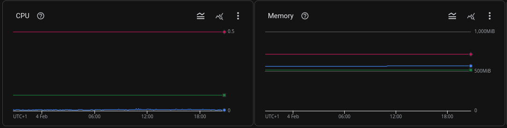
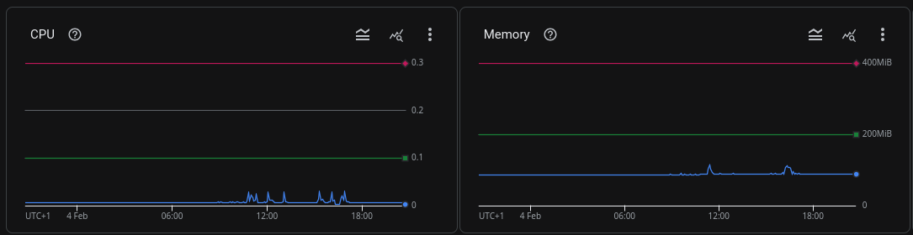
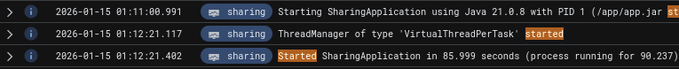
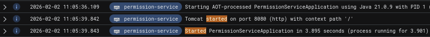

Spring Boot native images in practice
my journey of converting Spring Boot applications into native images
Kevin WatzalAbout me
Eager to try out different tools
Developer at
Love puns

Topics today
- What positive/n(eg)ative implications it had
- My experience with native images at work
- How-To & showcase
- Performance tests results
With screenshots from production
I won't cover
details about:
- Spring Boot
- GraalVM
- Native images
Who of you have successfully used Spring Boot in a native image in production?
Which of these applications is a native image?
Native Image vs Non-Native
2 similar services for comparison of our company in production
Native Image vs Non-Native
Both use:
- Spring JPA
- Liquibase
- Rest API
- Calls other services
- GCP Pub/Sub
Resources
Non-native
Native
Resources
Startup time
Startup time
Startup time
Benefits
- Amazing startup time
- Less resource usage (especially at startup)
- No JIT warmup
Downsides
Build-time
Non-Native
Native
Build-time
Non-Native
options:
machineType: 'E2_HIGHCPU_8'
Native
options:
machineType: 'E2_HIGHCPU_32'
Reflection...
Reflection...
...issues only occur at runtime
com.fasterxml.jackson.databind.exc.InvalidDefinitionException:
Cannot construct instance of `io.kay.graal.clients.PushServerResponse`:
cannot deserialize from Object value (no delegate- or property-based Creator):
this appears to be a native image,
in which case you may need to configure reflection
for the class that is to be deserialized
Downsides
- Buildtime increases a lot (1 minute vs 8 minutes)
- Reflection issues at runtime
- Limited bytecode manipulation
- Some dependencies might not work
There are solutions for all most downsides
Let's hop into the code
Performance Tests with Gatling
First cold start, without restart a second run
.injectOpen(
nothingFor(3),
rampUsers(5_000).during(10)
)
Tests
Tests
Tips & Tricks
Understand reflect-config.json
Include all needed resources
missing in buildtime = missing in runtime
Read the docs
Test containerized applications
Tips & Tricks
Run tests with non-native container first
On success: build native-image and run tests against it
Adds overhead even more, but catches most issues at the correct stage
Useful docs
Con-GRAAL-tulations
Common errors and resolutions
Common errors and explanations
Missing runtime hints
com.fasterxml.jackson.databind.exc.InvalidDefinitionException: Cannot construct instance of `io.kay.graal.clients.PushServerResponse`:
cannot deserialize from Object value (no delegate- or property-based Creator): this appears to be a native image,
in which case you may need to configure reflection for the class that is to be deserialized
Solution:
@RegisterReflectionForBinding({PushServerRequest.class, PushServerResponse.class})
public PushServerResponse sendSms(String message) {
return restClient.post()
.body(new PushServerRequest(message))
.retrieve()
.body(PushServerResponse.class);
}
Common errors and explanations
Missing resource hints
org.springframework.beans.factory.BeanCreationException:
Error creating bean with name 'entityManagerFactory':
Failed to initialize dependency 'liquibase' of LoadTimeWeaverAware bean 'entityManagerFactory':
Error creating bean with name 'liquibase': liquibase.exception.CommandExecutionException:
liquibase.exception.ChangeLogParseException: The file /db/liquibase/master.xml was not found in the configured search path: ...
Solution:
public void registerHints(RuntimeHints hints, ClassLoader classLoader) {
hints.resources()
.registerPattern("db/**");
}
Missing reflection hints
Caused by: java.util.ServiceConfigurationError: org.hibernate.bytecode.spi.BytecodeProvider:
Provider org.hibernate.bytecode.internal.bytebuddy.BytecodeProviderImpl not found
Solution:
// reflect-config.json
[
{
"name": "org.hibernate.bytecode.internal.bytebuddy.BytecodeProviderImpl",
"allDeclaredMethods": true,
"allDeclaredFields": true,
"allDeclaredConstructors": true
}
]